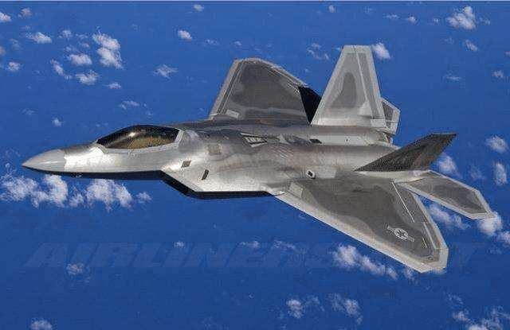

f22 战斗机图片
F-22“猛禽”（英语：Lockheed Martin F-22 Raptor）是世界上第一款量产的第五代隐形战斗机，
采单座双引擎设计。主要担任确保战区制空权的制空战斗机，额外任务包括对地攻击、电子战和信号情报[6]。F-22自2005年进入美国空军服役，
用以取代上一代的主力F-15战斗机。洛克希德·马丁为主承包商，负责大部分机身设计、武器系统和F-22的最终组装。计划合作伙伴波音航太则提供机翼、后机身、航空电子综合系统和培训系统。

F-22是当代造价最昂贵的战斗机之一，也是当今世上最先进的战斗机之一。配备了AN/APG-77主动相位阵列雷达、AIM-9X红外线空对空导弹、AIM-120C/D中程空对空导弹、二维F119-PW-100推力矢量引擎、
先进整合航电与人机界面等。在设计上具备超音速巡航（不需使用加力燃烧室）、超视距作战、高机动性、对雷达与红外线隐形等特性。据估计其作战能力为前一代主力机种F-15的数倍，是新一代重型战斗机。
另外，在开发F-22期间所建立的许多先进技术，也沿用到中型的F-35“闪电Ⅱ”（Lightning II）身上。洛克希德·马丁公司宣称，猛禽的隐形性能、灵敏性、精确度和态势感知能力结合，组合其空对空和空对地作战能力，
使得它成为当今世界综合性能最佳的战斗机。[7]
制造
第一批的F-22于2003年1月14日交付给内华达州的内利斯空军基地，并在2003年10月27日完成“独立初始作战试验与评价”。到2004年，共51架F-22猛禽战斗机已全部交付使用。
2006年，由洛克希德马丁公司和其他1,000家公司组成的猛禽开发集团和美国空军共同获得了Collier Trophy奖，这是美国航空领域的最富名望的奖项。美国空军将获得在七个现役作战中队之中抽调的F -22，并且由空军预备队和国家空军自卫队战斗中队三个部门共同执行飞行和维护任务。2000年8月中旬，美国空军与此前合作多年的洛克希德马丁公司续签了一个价值50亿美元的到2011年的生产合约，从2008年起，F-22猛禽战斗机开始以每年20架的速度生产。在2007年8月29日，洛克希德马丁公司举行了完成“第100架猛禽战机”生产里程碑的庆祝仪式，这架交付美国空军服役的新机生产序号是05-4100。
生产分工图
采购
美国空军原计划以262亿美元订购750架ATF，并于1994年开始生产，然而在1990年进行的主要航空器审查上改为生产648架，并推迟到1996年开始生产。但是1997年由于经费不稳定，改为购买339架。2003年，美国空军指出现有的国会费用只够其购买227架。截止2006年，五角大厦声明将订购183架航空器，这将节省下150亿美元，但同时提高每个航空器的花费。这个为期多年的订购计划被国会批准，但同时仍然接纳新的订购计划。
2006年4月，美国政府问责办公室估计F-22的成本是每架3.61亿美元。这个费用反映出了F-22的总项目的费用，由美国空军各战斗部门分摊并按计划购买;到目前为止，美国空军已经在猛禽战斗机的研究、开发和测试方面投资了280亿美元。这部分被指为是“沉没成本”的费用已经支出并分别于用于未来政策的制定，包括一个战斗机的复制品。根据2006年181架战斗机的总成本计算，每架战斗机的成本估计为1.776亿美元。如果进一步提高产量，单位成本将会继续降低。这些费用包括了2000年之前已经在研究和开发上投入的32.33亿美元。
订购全部183架战斗机实际支出了340亿美元，该计划的总费用为620亿美元，每架战斗机的单位成本约3.39亿美元。之后每架F-22战斗机的增量成本可以大幅降低至大约1.38亿美元。若美国空军当前订购100架以上的F-22战斗机，每架的成本仍将下降，并可以随着订购数量的增加持续降低。
F-22猛禽战斗机于2005年第一次在美国犹他州正式开始服役。F-22并不是最昂贵的战斗机。B-2轰炸机每架的成本大约为11.57亿美元（1998年）。尽管其增量成本低于10亿美元，但从冷战结束之后订单数量从132架锐减到21架，大大提高了其单位成本。F-22使用比B-2轰炸机或F-117战机更少的雷达吸收材料，预计可以降低后期的维护费用。
2007年7月31日，洛克希德马丁公司获得了一个总价值73亿的包括60架F-22战斗机的长期合约。这个F-22战斗机的生产合约使该公司获得了183架战斗机的生产任务，并会在2011年扩大生产规模。